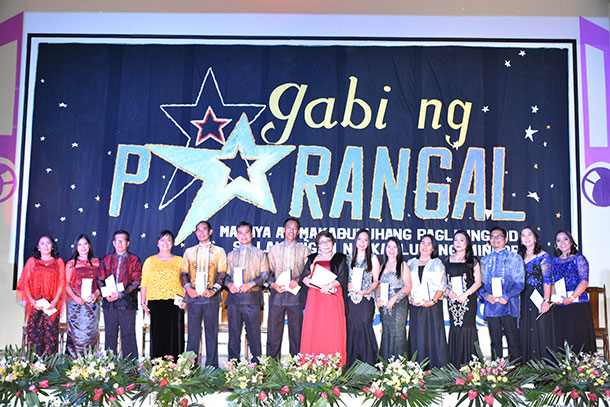
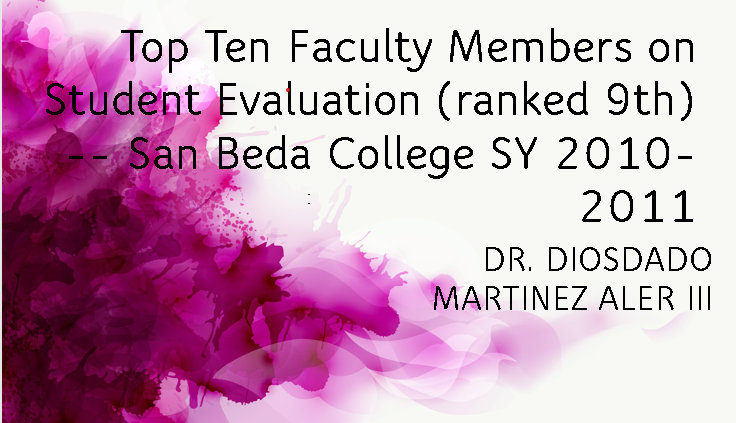
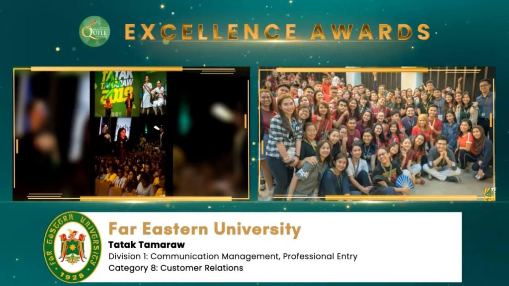
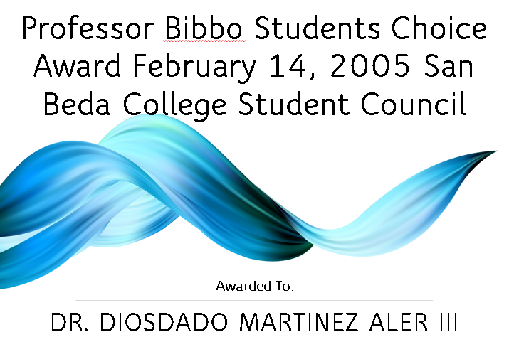
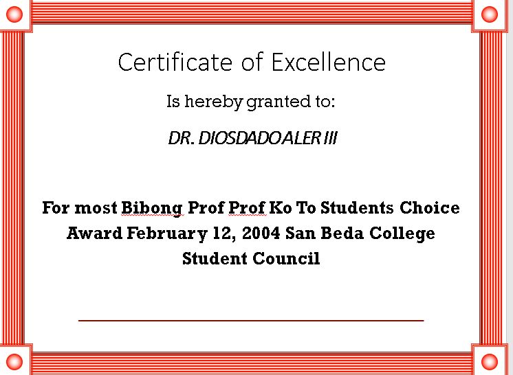
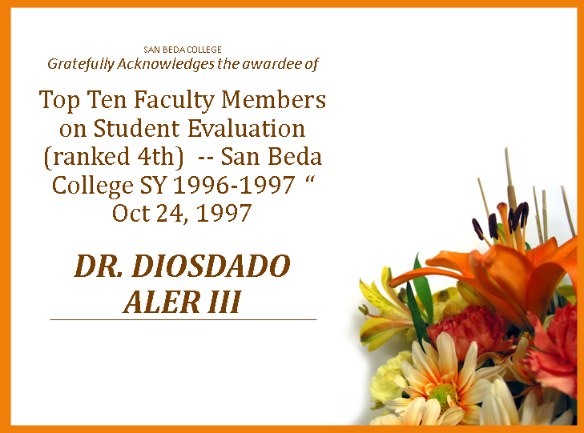

First Place - Paper Presentation (Technology, Engineering and Sciences Category , 3rd International and Annual Convention – Philippine Association of Extension Program Implementers (PAEPI-Global), Bahay Kalinaw University of the Philippines Diliman, Quezon City,
February 22-23, 2016
Outstanding Organization Moderator, Gabi ng Parangal San Beda College of Arts and Sciences March 2013

Top Ten Faculty Members on Student Evaluation (ranked 9th) -- San Beda College SY 2010-2011

Teaching Excellence Award -- Far Eastern University – East Asia College, First Semester SY 2008-2009 February 21, 2009

Professor Bibbo Students Choice Award February 14, 2005 San Beda College Student Council

Most Bibong Prof Prof Ko To Students Choice Award February 12, 2004 San Beda College Student Council

Top Ten Faculty Members on Student Evaluation (ranked 4th) -- San Beda College SY 1996-1997 “ Oct 24, 1997

Silver Medalist Oratorical Contest“ 1st Year High School Level, National Teachers College, October 1982